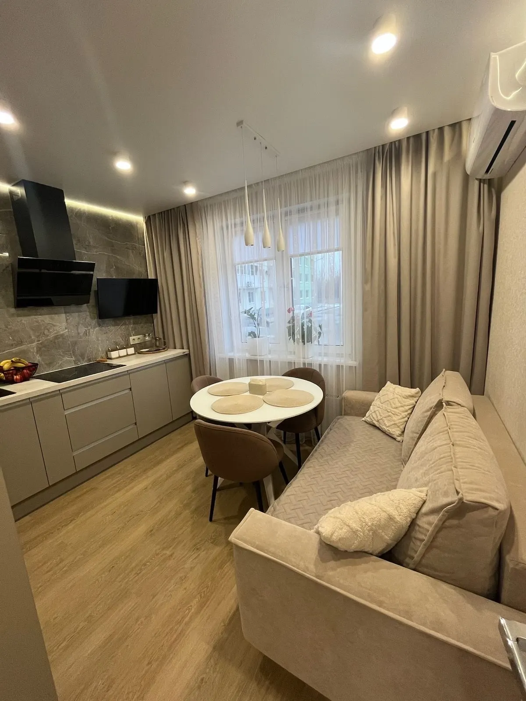
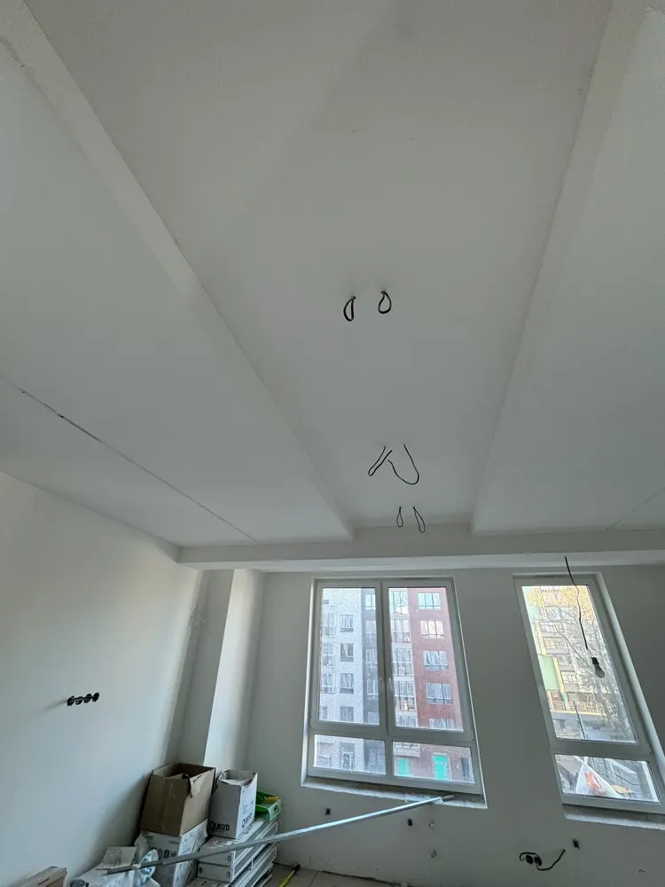
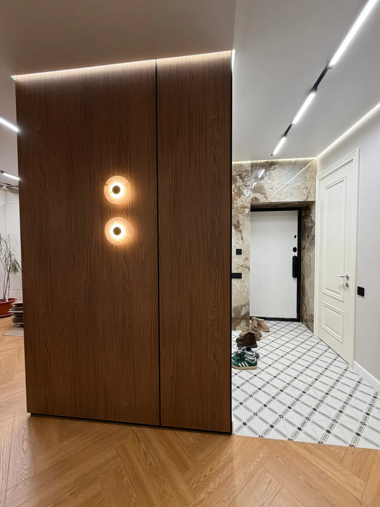

Заказал у них дизайн и ремонт под ключ — и всё супер! Ребята всё понятно объяснили, помогли с материалами, ничего не навязывали. Атмосфера в студии классная — спокойно и по-доброму. Комната получилась именно такая, как я хотел. Однозначно советую!

Дизайн. Ремонт. Детали.
От первой идеи
до готового дома.
РЕМОНТ
С КОТОРОГО НАЧИНАЕТСЯ
ИСТОРИЯ ВАШЕГО ДОМА

Скидка до 10%на все виды работПри заявке на замер · позвонить→

Ремонт под ключ
для вашей квартиры
От инженерных коммуникаций
до последнего штриха в отделке
Профильные
мастераВнимание
к деталямКомплексный
подходГарантия
по договору
мастераВнимание
к деталямКомплексный
подходГарантия
по договору

Комплексный
дизайн интерьера
Пространство для вашей жизни,
привычек и любимых вещей
Цельная концепция
интерьераПродуманные
решенияДизайн-проект
от 2 500 ₽/м²
интерьераПродуманные
решенияДизайн-проект
от 2 500 ₽/м²
Услуги и цены
Рассчитать смету →
Черновой ремонт
от 4 500 ₽/м²+
Черновой ремонт
от 4 500 ₽/м²+- Стяжка пола
- Штукатурка стен под чистовую отделку
- Замена окон и входной двери
- Электропроводка по проекту
- Разводка канализации и водоснабжения

Ремонт под ключ
от 15 000 ₽/м²+
Ремонт под ключ
от 15 000 ₽/м²+- Демонтаж и перепланировка
- Окна, двери, радиаторы
- Штукатурные и малярные работы, стяжка
- Сантехника, электрика, освещение
- Плитка, обои, напольные покрытия, потолки
- Вывоз мусора и уборка

Санузел под ключ
от 100 000 ₽+
Санузел под ключ
от 100 000 ₽+- Полный демонтаж покрытий
- Замена труб, стояка, полотенцесушителя
- Укладка плитки, запил под 45°
- Установка сантехники, душевой поддон
- Работа по дизайн-проекту

Дизайн-проект
от 2 500 ₽/м²+
Дизайн-проект
от 2 500 ₽/м²+- Обмерный план и перепланировка
- Расстановка мебели, развёртки стен
- Электрика, потолки, тёплые полы, вентиляция
- Каталог мебели и отделочных материалов
- 3D-визуализация будущего интерьера
Смета рассчитывается индивидуально после замера. Нажмите на карточку, чтобы увидеть состав работ.
Проекты и объекты
Больше работ во ВКонтакте →Видеообзоры объектов
Все видео →Отзывы клиентов
Делали ремонт под ключ, всё прошло отлично, качественно выполнена работа. Дизайнер Ирина помогла с выбором. Большой ассортимент и уютная атмосфера. Остались довольны, рекомендуем!
Лучшая компания, которую я когда-либо видел, сделали всё быстро и качественно. Хочу поблагодарить Ирину: выслушала и подсказала, что лучше. Всё супер, приду сюда ещё раз.
Очень хочу поблагодарить компанию за хорошую и качественную работу! Сделали очень опрятную, красивую, а самое главное — удобную комнату! Очень добрые и приветливые сотрудники. Очень рада, что наткнулась именно на вашу компанию!
Дизайн был выполнен под ключ. Впечатлила уютная атмосфера. Профессиональный подход. Дизайнер Ирина.
Впечатляющий ассортимент керамической плитки и мозаики. Цены приемлемые и конкурентные, можно найти хорошие варианты и в бюджетном, и в дорогом сегменте. Дизайнеры не задерживают и отвечают на просьбы.
Почему выбирают нас
Опыт более
7 лет
В ремонте квартир
и дизайне интерьеров
Индивидуальный
подход
Учитываем ваш стиль
и привычки
Профильные
мастера
Каждый отвечает
за своё дело
Внимание
к деталям
От коммуникаций
до чистовой отделки

Как мы работаем
Прозрачный процесс на каждом этапеЗнакомство
Обсуждаем вашу квартиру и пожелания к ремонту
Консультация
Разбираем задачи, приоритеты и бюджет
Замер
Изучаем пространство и его особенности
Дизайн-проект
Продумываем планировку, материалы и детали
Ремонт
Воплощаем проект силами профильных мастеров
Готовый дом
Проверяем результат вместе с вами
Для каждого дела —
свой профессионал
Несколько бригад и мастера разных специальностей.
Собираем их опыт в один цельный результат.
Плиточные работыЭлектрикаСантехникаОтделкаПокраска и обоиИнженерные коммуникацииМебельПотолкиОкнаДвери
Наследие ремонта · Нижний Новгород